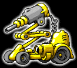
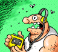

The Story
In the not too distant future, AI research suddenly experiences a breakthrough and computer programs can be made as intelligent as chimpanzees. This makes it possible to mass-produce robots for taking over tedious chores previously handled by unskilled labor, like garbage disposal, mail delivery and talk show hosting.
 This new generation of servant robots, popularly titled "urban droids"
or urbanoids for short, becomes a huge success. They are inexpensive,
they are practical, they come in a variety of different colors and
models. Everybody wants one.
This new generation of servant robots, popularly titled "urban droids"
or urbanoids for short, becomes a huge success. They are inexpensive,
they are practical, they come in a variety of different colors and
models. Everybody wants one.
To make life easier for robot owners, most local retailers install a special control server that automatically transmits weekly minor software updates and bi-annual major revisions to each unit, by radio waves. This totally eliminates the need for customer support about anything else than mechanical failure.
 The only weak link in the system is the server itself. But it comes with a warranty and its software was created by the same company who brought the world six generations of DOS. They assure people there's nothing to worry about. They have thought of everything.
They said they had solved the year 2000 problem.
They lied.
On April 26, 2000, the control server in a small town accidentally transmits the wrong system update information to all local robot units. There is a file name discrepancy and instead of the intended code replacements, it grabs the system administrator's saved settings file for Final Doom Quakem Raider VI. Then it gasps a last "WinErr: 013" and crashes. As a result, every droid in town gets its programming replaced by one single directive: destroy all human life.
Panic ensues as the formerly obedient robots go after their owners, but eventually everyone gets evacuated, most with only minor injuries. The military sets up road blocks and seals all possible exits from town, to keep the robots from spreading. Phone lines and communication cables are similarly cut, just in case the droids would attempt to pass on their directive over the network. When it turns out that there is no way to revoke the faulty programming, a quick decision is made to fire-bomb the area at nightfall, unless the problem has somehow resolved itself by then.
What nobody knows is that the town was never completely evacuated after all. You, Erwin O'Skunk -- an out-of-work TV repairman, were soundly asleep during the commotion, having partied yourself into a coma the night before. When you eventually wake up you are completely alone. After your initial disorientation and hangover clear up, you manage to piece together what has been going on by listening to the radio.
 You realize that you won't be getting any outside help. Nobody will miss you anytime soon and there is no way you can communicate to the rest of the world that you are still alive. There is only one thing to do. You will simply have to save the town (and yourself) on your own, by destroying or incapacitating every single droid before the bombing starts.
So you rush into your hobby room and build yourself a weapon and some protection out of the junk you've got lying around. Adding a trenchcoat and some sturdy boots, you grab a toolbox and get going. Somehow you feel confident that you will be able to handle this crisis -- or at least die trying.
Good luck!